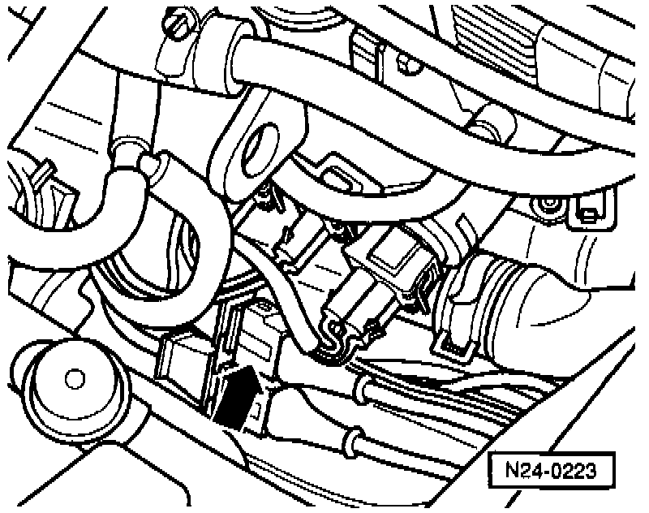
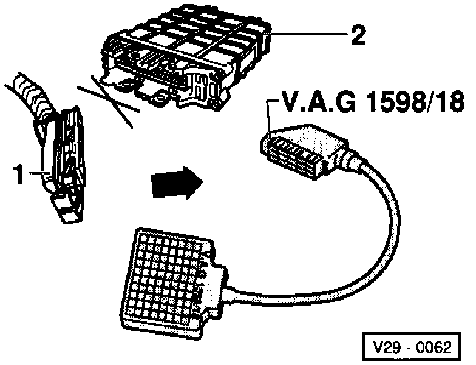
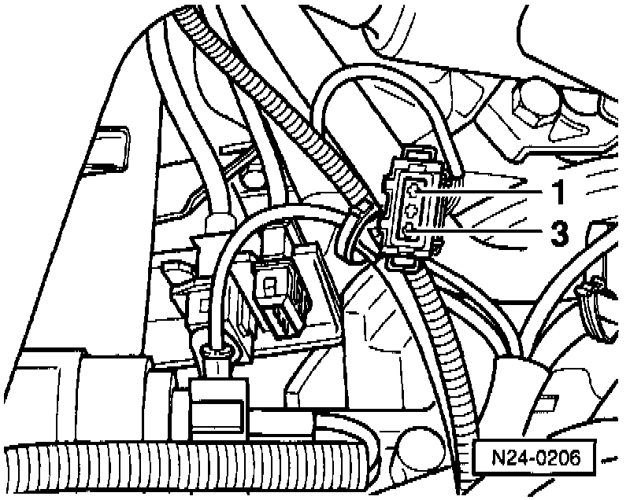

Engine Speed Sensor: Testing and Inspection
Special tools, testers and auxiliary items:- VAG 1598/18 test box.
- Multimeter (Fluke 83 or equivalent).
- Connector test kit VW 1594.
- Wiring diagram.
Test sequence:

- Disconnect white 3-pin connector from engine speed sensor (arrow).

- Connect VAG 1598/18 test box to ECM wiring harness (arrow).

- Check wiring between test box and 3-pin connector for open circuit according to wiring diagram.
- Terminal 1 and test box socket 67.
- Terminal 2 and test box socket 68.
- Terminal 3 and test box socket 56.
Resistance: max. 1.5 ohms.
- Additionally, check wiring for short circuit to one another.
- Terminal 2 and test box socket 56.
- Terminal 1 and test box socket 56.
- Terminal 1 and test box socket 68.
Specification: infinite ohms.
If no wiring malfunction is detected:
- Replace engine speed (RPM) sensor -G28-.
- Read the readiness code. If DTC memory has been erased, verify repair via appropriate display group, see Readiness code, creating. Testing and Inspection